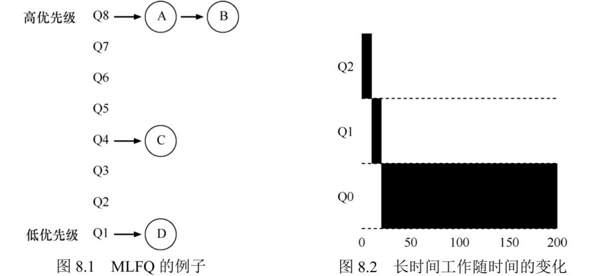
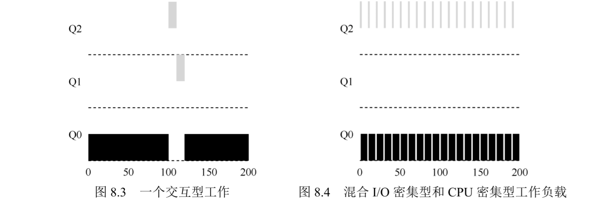
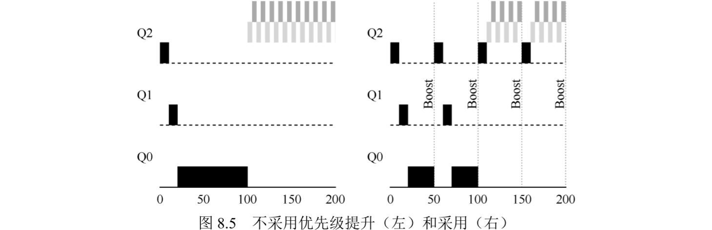
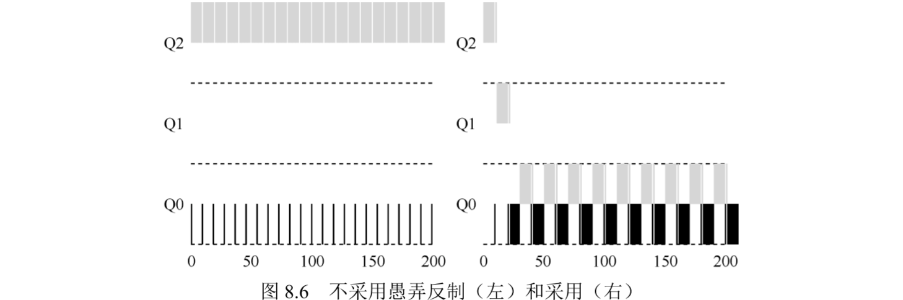
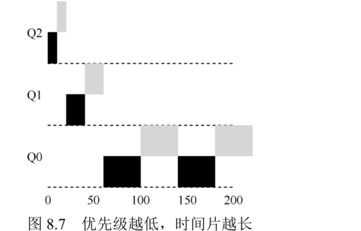

多级反馈队列(Multi-level Feedback Queue, MLFQ)
- 优化周转时间：先执行短工作，但通常不知道工作要运行多久
- 优化响应时间：使用轮转，但轮转的周转时间很差
- MLFQ通过观察进程的历史表现来做出更好的调度
- 若工作有明显的阶段性行为，则可用历史经验预测未来，如硬件分支预测、缓存算法、MLFQ
MLFQ：基本规则
- MLFQ中有很多独立的队列，每个队列优先级不同，总是优先执行较高优先级的工作
- 一个工作只能存在于一个队列中，每个队列中可能有多个工作，即优先级相同，它们轮转调度
- MLFQ根据观察到的行为调整任务的优先级：
- 若工作经常放弃cpu使用IO，可能是交互进程，应保持高优先级
- 若工作长期占用cpu，可能是非交互进程，应降低优先级
- 两条基本规则：
规则1：若A的优先级>B的优先级，则运行A不运行B规则2：若A的优先级=B的优先级，则轮转运行A和B
尝试1：如何改变优先级
- 工作负载：
- 运行时间短、频繁放弃cpu的交互型工作
- 需要很多cpu时间、响应时间不重要的长时间计算密集型工作
- 尝试调整MLFQ的优先级：
规则3：工作进入系统时放在最高优先级（最上层队列）规则4a：工作用完一个时间片就降低优先级（移入下一个队列）规则4b：工作在一个时间片主动放弃cpu，则优先级不变
实例1：单个长工作
- 若系统中仅有一个长工作，则它首先进入最高优先级队列，执行每个时间片后降低优先级，最终进入最低优先级，一直留在最低优先级，如图8.2

实例2：来了一个短工作
- 若在长工作长期运行在最低优先级时，来了一个短工作（只有几个时间片），则短工作进入时在最高优先级，运行几个时间片后，还未到达最低优先级就执行完毕。如图8.3
MLFQ的一个主要目标是近似SJF：
- 若不知道工作是短工作还是长工作，则在开始时假设是短工作并赋予最高优先级
- 若确实是短工作，则很快执行完毕
- 若是长工作，则慢慢移入低优先级队列
如果有IO呢
- 若交互型工作中有大量IO操作，即频繁在时间片用完之前放弃cpu，则其优先级可能一直很高，如图8.4

当前MLFQ的一些问题
- 这样设计的MLFQ可在长工作间公平地分享cpu，又能给短工作或交互型工作很好的响应时间
- 这样设计的MLFQ问题是：
- 饥饿问题：如果系统有太多交互型工作，它们会不断占用cpu，导致长工作饿死
- 愚弄调度程序：进程在每个时间片用完前主动放弃cpu，则可一直保持在最高优先级，得到远超公平的资源
- 一个程序可能在不同时间表现不同：计算密集型进程可能在某段时间表现为交互型，但优先级不能上升
尝试2：提升优先级
- 避免cpu密集型工作饿死：周期性提高所有工作的优先级
规则5：经过一段时间S，就将系统中所有工作重新加入最高优先级队列
- 优先级提升解决了2个问题：
- 进程不会饿死
- 进程由cpu密集型变为交互型，可得到正确处理
- 如图8.5，左侧不采用优先级提升，长工作在两个短工作到达后被饿死，右侧采用优先级提升，不会被饿死

- 优先级提升的问题：引入
巫毒常量(voo-doo constant)，设置周期S需要调参
尝试3：更好的计时方式
- 使用优先级提升仍无法解决的问题：调度程序被愚弄，若进程在每个时间片内都放弃cpu则可得到100%的cpu资源
- cpu计时实现愚弄反制：为MLFQ的每层队列都提供cpu计时，调度程序记录每个进程在每一层中消耗的总时间，只要进程用完自己的配额就将其降到低一级队列。
规则4：一旦工作用完了其在某一层中的时间配额（无论中间主动放弃了多少次cpu），就降低其优先级（移入低一级队列）
- 如图8.6，左侧不使用愚弄反制，进程可一直在高优先级独占cpu，右侧使用愚弄反制，进程用完配额后优先级降低

MLFQ调优及其他问题
- 如何调参：
- 使用多少个队列
- 每层队列的时间片设置多大
- 多久提升一次进程优先级
- 每个进程在一级队列中运行时间的配额如何设置
- 大多数MLFQ变体都可使不同队列的时间片长度不同，如图8.7：
- 高优先级队列通常有较短的时间片（10ms或更少），因为是IO密集型工作，更快地切换工作实现更优的响应时间
- 低优先级队列通常有较长的时间片，因为是cpu密集型工作，更长的时间片可均摊得到更高的cpu利用率，也可实现更优的周转时间

- 应尽量避免使用巫毒常量，虽然很难。通常会有一个写满各项参数默认值的配置文件，使得管理员可修改调整。
- 具体实现：
- Solaris的MLFQ实现（时分调度类TS）很容易配置。它提供了一组表来决定进程在其生命周期中如何调整优先级，每层的时间片多大，以及多久提升一个工作的优先级
- 其他一些MLFQ调度程序没用表，甚至没用本章中讲到的规则，有些采用数学公式来调整优先级
- FreeBSD 调度程序（4.3 版本），会基于当前进程使用了多少CPU，通过公式计算某个工作的当前优先级。另外，使用量会随时间衰减，这提供了期望的优先级提升
- 有些调度程序将最高优先级队列留给操作系统使用，因此通常的用户工作是无法得到系统的最高优先级的
- 有些系统允许用户给出优先级设置的建议，比如通过命令行工具nice，可以增加或降低工作的优先级（稍微），从而增加或降低它在某个时刻运行的机会
MLFQ：小结
- MLFQ的规则总结：
- 规则1：如果A的优先级>B的优先级，运行A（不运行B）
- 规则2：如果A的优先级=B的优先级，轮转运行A和B
- 规则3：工作进入系统时，放在最高优先级（最上层队列）
- 规则4：一旦工作用完了其在某一层中的时间配额（无论中间主动放弃了多少次CPU），就降低其优先级（移入低一级队列）
- 规则5：经过一段时间S，就将系统中所有工作重新加入最高优先级队列
- MLFQ不需要对工作的运行方式有先验知识，而是通过观察工作的运行来给出对应的优先级，因此可同时满足各种工作的需求
- 使用MLFQ作为基础调度程序的OS包括：类BSD unix、Solaris、Windows NT之后的windows等
文章作者
canpi
上次更新
2020-07-05
许可协议
CC BY-NC 4.0
文章阅读量
0